Notes On Gaussian Processes
Back in grad school, I had a particular interest in a family of Nonparametric Bayesian methods involving the Dirichlet Process. Since that time, I have been meaning to catch up on the DP's close cousin, the Gaussian Process. I'm finally getting around to working through Rasmussen and William's book on this topic, so here I'm jotting down my notes. The code is kept in this repo.
Introduction
While the DP is known to provide a probability distribution over the space of all probability distributions, the Gaussian Process can be thought of a probability distribution on the space of all smooth functions. That is, a single draw from a GP is a smooth function. Importantly, we can use the GP as a prior for modeling any unknown non-linear relationships we want. Thus, if we have some finite number of observations relating X and Y, we can flexibly model the relationship between the two using a GP prior. Then, we can use the GP posterior for function estimation, interpolation, or forecasting.
Let's get a concrete example up front, then dive into some detail about the GP. In the figure below, I've shown a small number of observations relating X and Y.
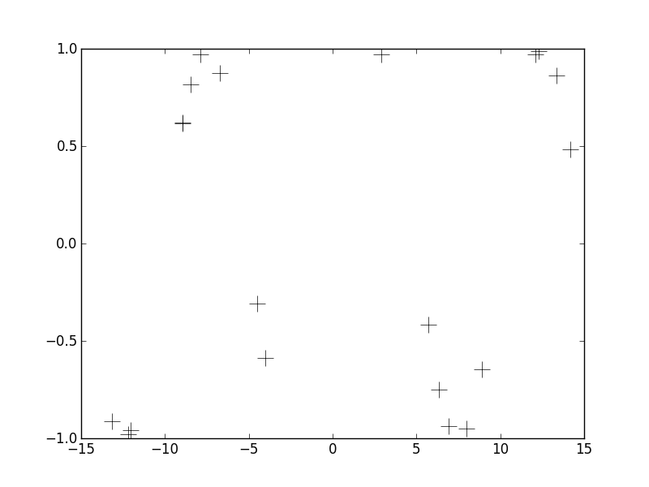Pardon the lack of axes labels. We can see that the observations span an x-range of about +/- 15 and the y-range spans a range of +/- 1. These data were generated from a particular function (y = sin(x)), but in practice we never know the true relationship between x and y. Instead, we wish to estimate this unknown non-inear relationship using the observations we do have. Further, it would be nice to not only have an estimate of the function y(x) but also some notion of how uncertain we are about that function. This is what Gaussian Process Regression gets us. To jump to the punchline right away, below I'm plotting the posterior distribution over y(x) when using a particular GP prior.
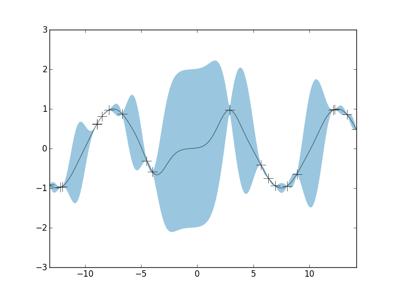The black crosses are the observations, the black line is the posterior mean, and the blue shaded region is a 95% credible interval. Notice that the width of the credible interval is non-constant. In regions where we have several observed data points, we're pretty well able to constrain our estimate of y(x). But in regions where we have very little observed data, we have little constraining power, and our uncertainy about our function grows. Again, the credible intervals give us a quantification of this uncertainty given our obervations: they show us what the set of possible functions might be that are consisent with our data. So let's dive into a little more detail about how GPs work.
Sampling a GP
A Gaussian Process is characterized by two "parameters": a mean function and a covariance kernel. A single draw from a Gaussian Process is denoted as
\[ g \sim GP(\mu, \mathscr{k}) \]where again g, being a draw from a GP, is a function over the domain of the kernel. As a concrete example, below are a few draws from a GP. I'll get to the details later on, but here we just want to have some visualizable examples of what's going on.
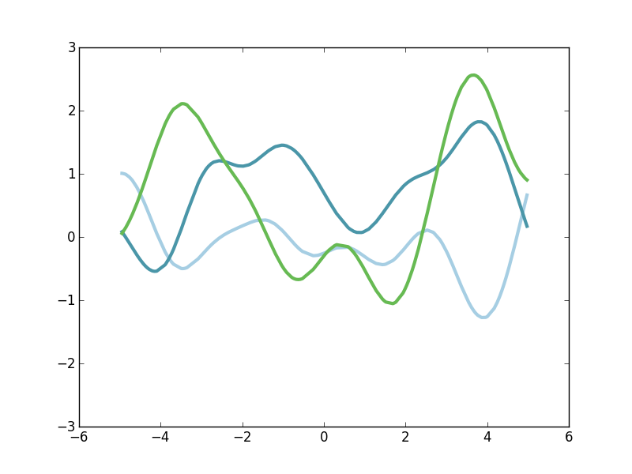The figure above shows exactly three draws from a particular GP. The domain of x is about minus 5 to plus 5, and we have a green function, a light-blue function, and a darker-blue function. Each of these functions is relatively smooth and slowly-varying, but they're each pretty different. They're each a random draw from the space of smooth functions. So in order to ease into understanding how to sample from GP priors and posteriors let's start with something more familiar.
Diversion about Gaussian Distributions
Something we're surely familiar with is drawing samples from a Gaussian distribution. \[ x \sim N(\mu, \sigma^2) \] Here, a single random variable x is drawn from a Normal distribution which is parameterized by a mean and a variance. We can visulize the full probability density of this distribution as well a few samples from it.
[insert figure]While we were drawing univariate Gaussian random variables, we can generalize this to higher dimensions with the Multivariate Normal distribution, denoted as \[ \vec{x} \sim N(\vec{\mu}, \Sigma) \] Here, our random sample is now a vector is some higher-dimensional space. The distribution is still parameterized by a mean and a variance, but now their higher-dimensional cousins. There is a mean vector, which represents the centroid point in the higher-dimensional space. And then there is Sigma, the covariance matrix. This is an MxM matrix (where M is the dimensionality of the distribution) that quantifies the covariance of each of the dimensions of the space. A two-dimensional example makes things concrete.
\[ \vec{\mu} = (1,1)^T \] \[ \Sigma = \begin{bmatrix} 5 & 3 \\ 3 & 10\end{bmatrix} \] This covariance matrix quantifies how correlated each dimension is, and also the univariate marginal variance of each dimension. So the first row and first column denotes the covariance between dimension \(x_1\) and dimension \(x_1\), ie. how does \(x_1\) vary with itself, ie. what is \(Var(x_1)\). In the first row and second column, we have the element corresponding to the correlation betwee \(x_1\) and \(x_2\). Thus, with the Multivariate Normal distribution, we needn't assume that each dimension of our space is simply a draw from a univariate Normal which is completely independent of the other dimensions. Instead, we explicity model the correlation structure using \(\Sigma\).
Here's a few draws from the two-dimension Gaussian distribution above as well as the probability density contours of the distribution (note that they're elliptical).
[insert figure]Again, by altering \(\Sigma\), we can change the shape of the distribution. Here's a second example with a different \(\Sigma\).
[insert figure]The examples here have involved draws from two-dimensional Normal distributions, but all these premises apply for any higher dimensionality that we might pick.
Back to GPs
When thinking about the domain of a function (let's call this domain \(x\)), we are typically considering an infinite number of points on the Real Line. Then, \(f(x)\) itself is also an infinite point set, We're going to start thinking about as an infininte dimensional vector. What if we could draw that vector randomly from probability distribution? Above, we were easily drawing two-dimensional vectors from a known probability distribution. With \(f(x)\), we will draw this infinite-dimensional vector from an infinite-dimensional stochastic process known as the Guassian Process. Thus, we are able to draw random functions from a probability distribution over the set of all funcitons. While this seems impossible, the clever thing about the GP (the reason it gets its name), is that while it is an inherently infinite dimensional object, all possible finite-dimensional marginal distributions are simply Multivariate Normal distributions with a simple mean vector and covariance matrix.
The GP, being infinite dimensional, is not parameterized by a mean vector and covariance matrix. Instead, it is parameterized by a mean function, and a kernel function. \[ g \sim GP(\mu(x), \mathscr{k}(x,x')) \]
The mean function \( \mu(x) \) is simply the average value of \(y(x)\) over all possible functions on the domain \(x\). As I mentioned, we can typically just set \( \mu(x)=0, \forall x\).
The kernel function \( \mathscr{k}(x,x'):\mathbb{R} \times \mathbb{R} \mapsto \mathbb{R} \) is simply a function that takes two points from the domain, call them \(x\) and \(x'\), and computes some notion of "distance" between our expected functions at those two points. The kernel is used to quantify how similar we expect two points \(y\) to be for two points in the domain. There's lot of kernels to choose from and we'll meet just a few of them later on. As we'll see, they help us form a meaningful prior on what kinds of functions we expect to see.
So here's an important thing to notice. The GP is parameterized by functions \( \mu \) and \(\mathscr{k}\) which are inherently infinite. But, for any finite set of points \(\{x_1, x_2, ..., x_N\}\) that we might care about, it is easy to compute things like \(\mu(x_1) \) and \( \mathscr{k}(x_1, x_2) \). Recall I said that any finite dimensional marginal of the GP is a Multivariate Normal. Therefore, the trick is that for any fininte point set we have, we can compute \( \vec{\mu} = \{\mu(x_1),...,\mu(x_N)\} \) and \[ \Sigma = \begin{bmatrix} \mathscr{k}(x_1,x_1) & ... & \mathscr{k}(x_1,x_N) \\ ... & ... & ... \\ \mathscr{k}(x_N,x_1) & ... & \mathscr{k}(x_N,x_N) \end{bmatrix}. \]
So to draw a funciton from a GP prior, the procedure is actually quite simple. First, we pick a finite point set from our domain: this point set is where we care to evaluate our random function. We could pick an evenly-spaced grid, or a set of randomized points, absolutely doesn't matter.
x = np.sort(np.random.uniform(-5,5,200))
Next, let's pick a kernel and then calculate our \(200 \time 200 \) covariance matrix \( \Sigma \) but simply evaluating the kernel at all pairwise combinations of x values that we have. I'll discuss kernels more later, but for I'll use what's called the Square Exponential kernel. This simple kernel quantifies our prior belief that \(y(x)\) should be similar for any two values of \(x\) that are close, and should be less correlated the father apart the two values of \(x\) are. The result is that our random functions should be kind of smooth and evolve rather slowly. So we'll use this kernel to calculate our finite-sized \(\Sigma \).
kernel = SquaredExponential(1,1)
Sigma = np.zeros((len(x), len(x)))
for i in range(0, len(x)):
for j in range(0, len(x)):
Sigma[i,j] = kernel(x[i], x[j])
Now we have a covariance matrix for a regular old Multivariate Normal distribution. For our mean vector, let's just do a vector of zeros. So now, drawing a sample from a GP prior is as simple as,
g = multivariate_normal(np.zeros(len(x)), Sigma)
That's it. Now we have a function \(g(x) \) that we can visualize against \(x\). Again, here's three different draws from that Multivariate Normal distribution.
They each evole rather slowly. The mean (over all samples) is approximately 0 at all \(x\). This behavior is indicative of using the Squared Exponential kernel for our prior. Before we get to posterior inference, let's dive into some more detail about kernel choices.
Kernels
There's many kinds of kernels to choose from and our choice of kernel (and their hyperparameters) has a big impact on the properties of functions that result from our GP. There's a great kernel cookbook that you can use for reference, and I will stick to their terminology and definitions. So let's first dive more into that Squared Exponential kernel.
Squared Exponential
The SE kernel is perhaps the simplest and most common for tasks such as function estimation and interpolation. The functional form should look pretty familiar. \[ \mathscr{k}(x,x') = \sigma^2 \textrm{exp}\left(- \frac{(x - x')^2}{2 \mathscr{l}^2}\right) \]You'll recognize that this happens to be the forms of a univariate Gaussian distribution. This simply quantifies that points that are close together should be the most correlation, and that the correlation should fall off gradually with distance. Notice that this kernel only depends on the relative distance \(|x - x'| \) and not on the precise locations of \(x\) or \(x\), thus this kernel is said to be isotropic. Let's visualize the kernel's "profile" as a function of the distance \(|x - x'| \): it looks like half of a Guassian distribution.
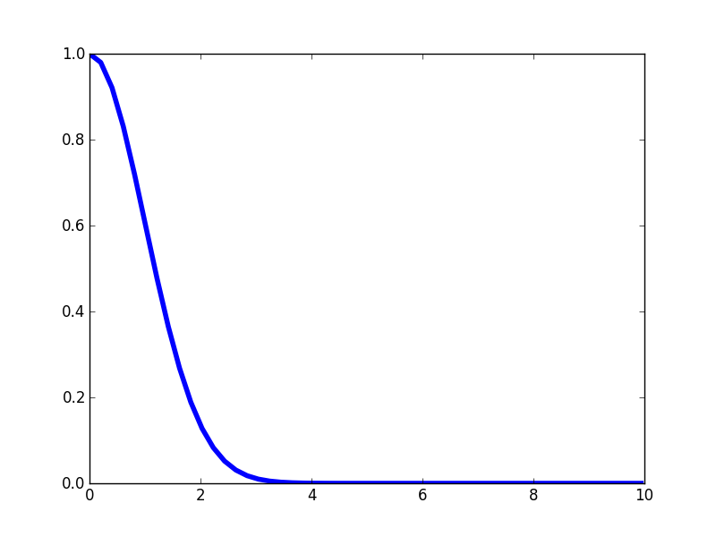Again, notice that this kernel is maximized when the distance between two points approaches zero, and then it falls off. The rate at which the correlation falls of is controlled by the length-scale parameter \(\mathscr{l} \). If we make \(\mathscr{l} \) larger, then we expect correlations at longer spatial scales. Here's the kernel profile when we make \(\mathscr{l} \) larger.
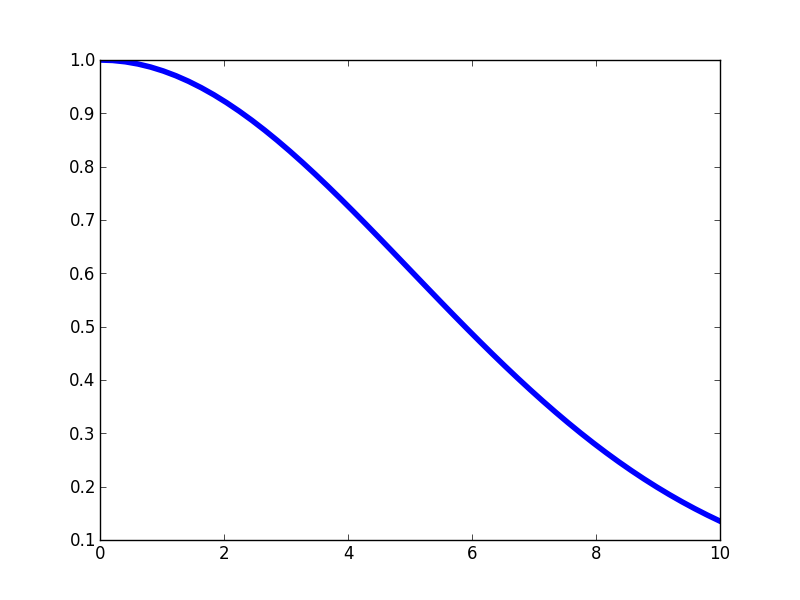And here's a few samples from that corresponding GP prior.
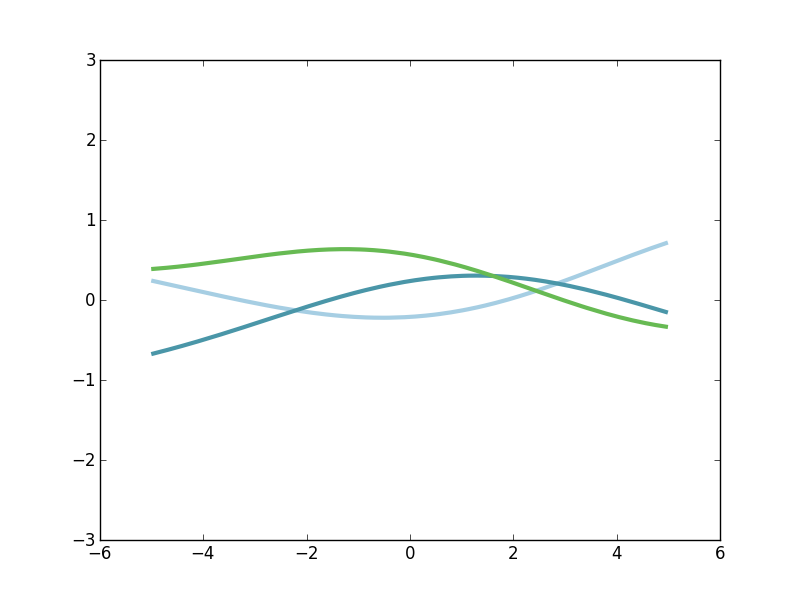Notice that these functions are far less wiggly and evolve more slowly. That's because we expect \(g(x)\) and \(g(x')\) to be more highly correlated over longer spatial scales.
The \(\sigma^2\) hyperparameter in the SE kernel simply controls the typical variance of the range of \(g(x)\). Alright, let's move on to another kernel.
Periodic
The Periodic kernel can be used to quantify any prior guess we have that our functions of interest have some temporally repeating structure on some timescale. Here's the functional form of the Periodic kernel,
\[ \mathscr{k}(x,x') = \sigma^2 \textrm{exp}\left(- \frac{2\textrm{sin}^2(\frac{\pi|x - x'|}{p})}{ \mathscr{l}^2}\right) \]Here is the profile of the Periodic kernel.
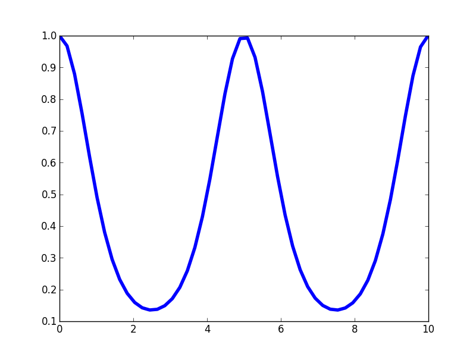Like the SE kernel, the Periodic kernel is maximal when the distance between the points approaches zero and then it rolls off away from that point. But unlike the SE kernel, the Periodic kernel rises again to a maximum at fixed intervals defined the by hyperparameter \(p\). Thus, it creates a kernel structure that has high correlations are regular intervals. Let's look at a few draws from the corresponding GP prior.
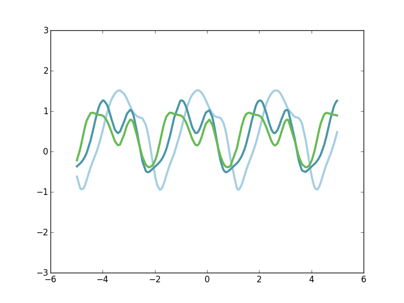Notice that each of these three functions has a repeating structure to it, yet they're each quite different. One way to think about these function draws is that a randomized function is create (as if from the SE kernel) and then that base function is repeated at a fixed period. So each of our three function draws has the same periodicity, but the underlying form that is being repeated is quite arbitrary. Note that this repitition occur indefinitely in both directions, forming a perfectly periodic signal. If, however, we want functions that are slightly periodic on small spatial scales and much less correlated on longer time scales, we can turn to the Locally Periodic kernel.
Locally Periodic
The Locally Periodic kernel is just the product of an SE kernel and a Periodic kernel. It is a kernel with periodic correlation structure, but where the strength of that periodic correlation decays over long scales. The equation for this kernel is \[ \mathscr{k}(x,x') = \sigma^2 \textrm{exp}\left(- \frac{2\textrm{sin}^2(\frac{\pi|x - x'|}{p})}{ \mathscr{l}^2}\right) \textrm{exp}\left(- \frac{(x - x')^2}{2 \mathscr{l}^2}\right). \]
The kernel profile has periodic peaks, but those peaks decay in their magnitude.
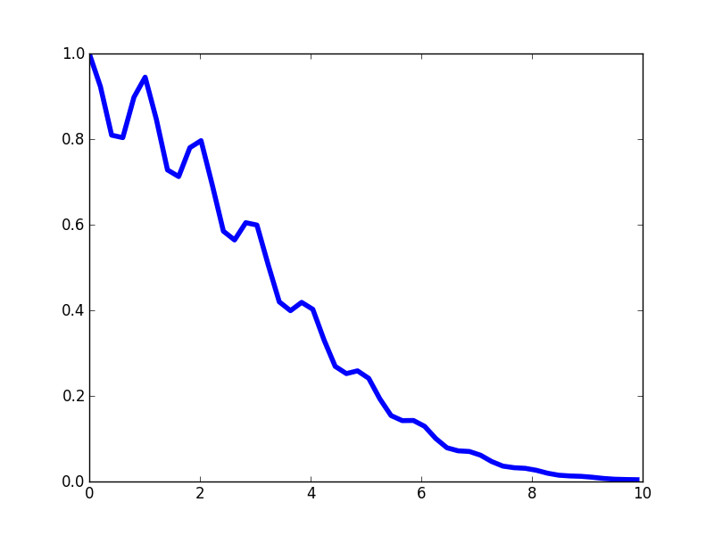Function draws from a GP using this kernel should have short-scale periodic structure, but periodicity is not strictly fixed. Instead, disparate parts of the signal might be quite uncorrelated with each other. Here's a few functions draws.
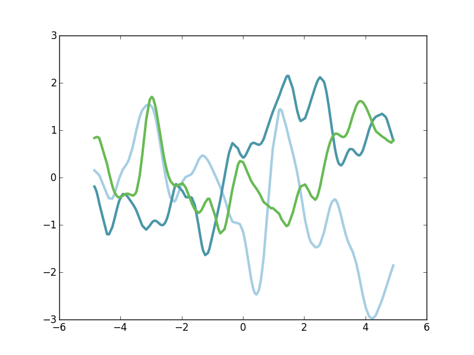There are many other kinds of kernels that can be used to capture functions with sharper discontinuities or other features that we might be interested in. Here I've discussed only a few, but if you're interested in learning more, you can turn to the book Gaussian Proccesses For Machine Learning or to the Kernel Cookbook.
Posterior Estimation
At this point, we've discussed a great deal about this GP object and how we can imagine that it forms a probability distribution over functions. But instead of just drawing samples from that distribution, we want to be able to use this object with real data to form a posterior estimate. That is, given some observed data that we collected and a GP prior, we can quantify the posterior distributions over all smooth functions that might have given rise to our observations. As we'll see, updating our GP prior with our data yields a GP posterior from which we can easily take news draws from the space of functions that explain the data well. Further, we can fully quantify our confidence intervals over function space.
Let's suppose we have some training data \(\{(y(x_i), x_i)\}|i=1,...,N \} \). For this finite sample of \(N\) data points, we have made observations \(y(x_i)\) of our unknown function \(y\) at various points \(x_i\). We want to quantify our estimate about \(y\) for any other potential values of \(x\) for which we don't have observations. We'll refer to these values of \(x\) as our test values \(x_*\). And their corresponding (unknown) values of \(y\) will be called \(y_*\). With a GP prior in place on the relationship between \(x\) and \(y\) for all \(x\), we can ask what is the prior joint probability distribution between all possible training data \(y\) and test data \(y_*\). Since our training data is surely finite, and our test data is some finite set of \(x\) that we are curious about, this induces from the GP a finite-dimensional Multivariate Normal distribution. \[ \begin{bmatrix} y \\ y_* \end{bmatrix} \sim N(\vec{0}, \Sigma) \] And it turns out that the covariance matrix \(\Sigma\) of this Normal distribution breaks into a simple block form \[ \begin{bmatrix} y \\ y_* \end{bmatrix} \sim N\left(\vec{0}, \begin{bmatrix} K(x,x) & K(x,x_*) \\ K(x_*,x) & K(x_*,x_*) \end{bmatrix} \right) \] where \(K(x,x)\) is the \(N\) by \(N\) covariance matrix that is calculated by applying the kernel to all pairwise combinations of x in the training set. And so on. This is the form of the full joint prior on all possible training and test sets.
With this prior, the induced posterior distribution over the unknown \(y_*\) for the test data is a Multivariate Normal with mean and covariance that are easily calculated from the components defined above. \[ y_* | x_*, x, y \sim N(\vec{\mu}, \Sigma), \] where now, \[ \vec{\mu} = K(x_*,x)K(x,x)^{-1}y \\ \Sigma = K(x_*,x_*) - K(x_*,x)K(x,x)^{-1}K(x,x_*). \] While these final equations might look a little rough, it is with a few simple matrix manipulations and we have a closed-form solution to our posterior over function space.
So given any observed pairs \(y(x_i )\) and \(x_i\) and given a GP kernel of our choosing, we can easily caluculate the mean and covariance matrix of a Multivariate Normal distribution that forms our posterior over the test data set. And now we can draw samples exactly as we did above.
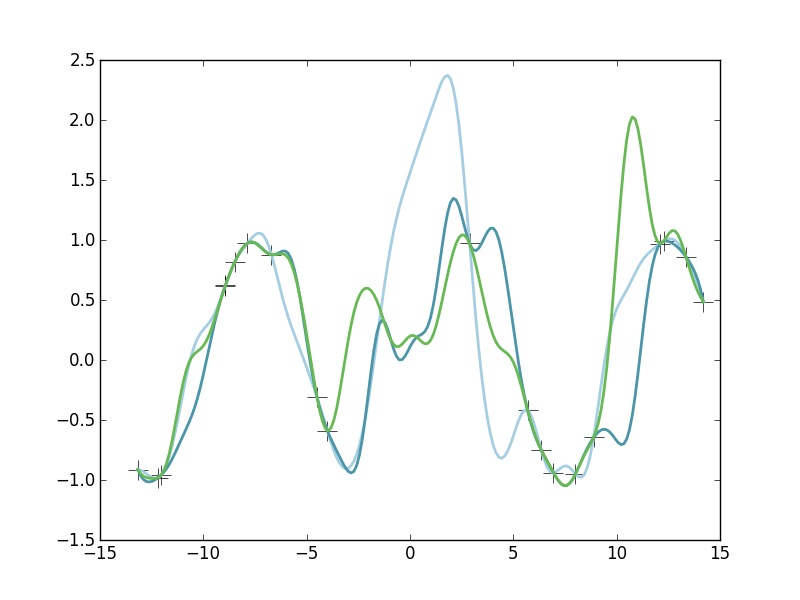Here we see three samples drawn from our Gaussian Process posterior. Note that each of these functions are fairly different. However, note that near our observed datapoints (the crosses), each of the these functions are in good agreement. These function draws are each a plausible explanation of the data. But also notice that in areas where we don't have much observed data (such as near x=0), the functions are wildly different from each other. This is because we don't have any constraining power there, we are highly uncertain there about \(y(x)\) in those regions.
We don't need to draw a bunch of example functions from the posterior. Since our posterior is Multivariate Normal, we can look at the posterior mean and total posterior variance. That is, the mean \(\vec{\mu}\) of our posterior Normal is simply our estimate of the average of all possible functions that could explain the data. In expectation, this is our best "point estimate" of the true underlying function \(y(x)\). Further, our posterior covariance matrix quantifies our estimate of the correlation structure of points in x-space. Along the diagonal of this covariance matrix is our quantification of the full uncertainty of \(y(x_*)\) at each \(x_*\). Therefore, it easy to visualize our "best-guess" function (the posterior mean) as well as a 95% credible interval of our true uncertainty about that function.
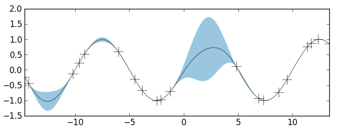In the figure above, the observed data are shown as crosses. I've use a GP prior with an SE kernel and length-scale parameter equal to 1. The black curve is the posterior mean and the blue shaded region is the credible interval. Again, in areas where we have several observations, the uncertainty is very low and the credible interval is very narrow. In areas where we have very little data, the credible interval grows larger. Thus, we have our posterior estimate over the space of all non-linear functions \(y(x)\).